صَرح
A national platform for Libya unifying the Real Estate Registry and Digital Identity issuance — built on verifiable credentials, append-only audit, and tamper-evident deeds.
Chapter 1
Libya's real estate sector currently relies on paper deeds issued, transferred, and verified manually across municipal offices. The lack of a central registry has produced three persistent problems: (i) title insecurity, where multiple owners may legitimately hold conflicting paper deeds for the same parcel; (ii) verification opacity, which forces buyers, banks, and courts to rely on uncertain provenance chains; and (iii) identity fragility, where there is no national digital identity that can be cryptographically bound to a property holding.
These problems are amplified by the country's historical disruptions: archive losses, multiple parallel administrative systems, and the absence of a canonical reference dataset for parcel geometry.
legacy_national_no field on every citizen and a deed reference field on every property.INSTEAD OF UPDATE/DELETE triggers.Comparable national-registry initiatives provide instructive prior art. The table below contrasts Sarh's positioning against three reference systems.
| System | Country | Identity Model | Deed Model | Public Verify |
|---|---|---|---|---|
| e-Estonia | Estonia | National eID (chip card) | X-Road federated | Yes (X-Road) |
| Bhumi | India (West Bengal) | Aadhaar bind | Centralized DB | Limited |
| SR Lanka Land Registry | Sri Lanka | NIC bind | PDF + signature | Yes |
| Sarh | Libya | NTAG 424 DNA + SSI (ACA-Py) | PAdES + QR + SHA-256 | Yes (no login) |
Chapter 2
Sarh follows an incremental SDLC partitioned into thirteen delivery phases (0 through 12). Each phase has an explicit Definition of Done: code passes lint and unit tests, an end-to-end happy-path runs green, API endpoints appear in OpenAPI, permissions are reviewed against the role-permission map, the Arabic UI is sanity-checked on RTL with real Arabic content, and audit log entries are verified for every write path.
All major components are commodity open-source: ASP.NET Core 8 for the API, SQL Server 2019/2022 for the data store, Angular 21 + Flutter for clients, Hyperledger ACA-Py for SSI, and NTAG 424 DNA chips (Mifare ecosystem) for cards. No exotic vendor lock-in.
The reference deployment is a single Docker Compose stack on a VPS (api, web, mssql, aca-py, nginx, clamav). Backups are nightly full + hourly log-shipping for SQL Server.
Per-card cost is approximately $0.85 (NTAG 424 DNA in volume). The expensive moving parts are operator training and the survey of legacy paper deeds — not technology spend.
| Risk | Likelihood | Impact | Mitigation |
|---|---|---|---|
| NFC card cloning | Medium | Critical | NTAG 424 DNA SUN messages with rolling counter; static UID is never trusted alone |
| Polygon overlap with legitimate paper deed | High | Medium | Soft-block: warn officer, do not auto-reject; resolve via review committee |
| National eID launch forces migration | Medium | High | legacy_national_no on every citizen; identity model is re-issuable |
| PDF deed manipulation | Medium | Critical | PAdES signature + SHA-256 stored in DB; verify endpoint compares hash on download |
| Audit log tampering by privileged user | Low | Critical | INSTEAD OF UPDATE/DELETE triggers at DB level; not a permission, a structural prohibition |
| Connectivity loss at registration kiosk | High | Low | Wizard state held in browser signals; recovery on reconnect |
apps/, packages/, infra/, docs/)scripts/db/run-migrations.ps1 (sqlcmd-based)mermaid.inkChapter 3
| Role | Primary Concern | Surface |
|---|---|---|
| Citizen | Register property; carry verifiable ID | Mobile + web |
| Registry Officer | Review submissions; approve/reject deeds | Officer portal |
| ID-Issuance Officer | Capture biometrics, encode card | ID-issuer kiosk |
| Super Admin | User management, system config | Admin console |
| Public Verifier | Confirm a deed/card is genuine | verify.sarh.ly (no login) |
| LVCT (operator) | Uptime, security, data sovereignty | Ops dashboards |
| ID | Requirement | Priority |
|---|---|---|
| FR-1 | The system shall authenticate citizens by national ID + password | Must |
| FR-2 | The system shall allow citizens to register a property by drawing a polygon and uploading documents | Must |
| FR-3 | The system shall reject overlapping centroids on approved properties (geographic uniqueness) | Must |
| FR-4 | The system shall warn — but not block — overlapping polygons during officer review | Must |
| FR-5 | The system shall issue a PAdES-signed PDF deed on approval | Must |
| FR-6 | The system shall produce a verifiable QR pointing to verify.sarh.ly/{code} | Must |
| FR-7 | The system shall encode an NTAG 424 DNA card per citizen with rolling-counter SUN URLs | Must |
| FR-8 | The system shall issue a Verifiable Credential (W3C VC, did:sov) on each approved property | Should |
| FR-9 | The system shall allow public verification of any deed without login | Must |
| FR-10 | The system shall maintain a Citizen → Properties timeline visible only to the owning citizen and reviewing officers | Must |
| FR-11 | The system shall preserve a legacy_national_no reference on every citizen for paper-era continuity | Must |
| FR-12 | The system shall support Arabic-RTL UI as the default language | Must |
| FR-13 | The system shall surface a tamper banner if the served deed PDF SHA-256 differs from the stored hash | Must |
| ID | Category | Target |
|---|---|---|
| NFR-1 | Performance — API p95 | ≤ 250 ms for read endpoints under 100 RPS |
| NFR-2 | Availability | 99.5% measured monthly |
| NFR-3 | Security — passwords | bcrypt cost factor 12 minimum |
| NFR-4 | Security — JWT | HS256, 24-hour TTL, no PII in claims |
| NFR-5 | Audit | Every write emits an audit_log row; rows are append-only |
| NFR-6 | Localization | All citizen-facing UI Arabic; error envelope carries message_ar + message_en |
| NFR-7 | Recoverability | RPO ≤ 1 hour, RTO ≤ 4 hours |
| NFR-8 | Data sovereignty | All PII at rest within Libyan-jurisdiction infrastructure |
| NFR-9 | Accessibility | WCAG 2.1 AA for the public verify page |
| NFR-10 | Observability | Structured logs (Serilog) + healthcheck endpoint |
officers.permissions.Chapter 4
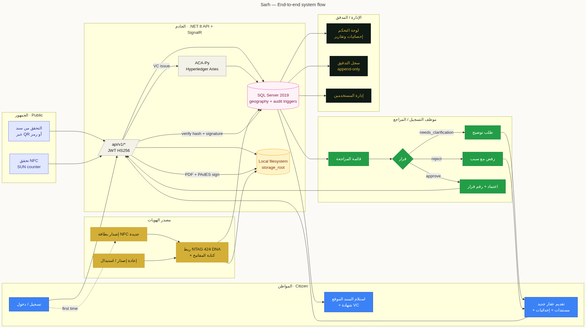
apps/web/) routed by role to citizen, officer, ID-issuer, admin, and verify shellsapps/mobile/) for citizens — Riverpod, go_router, mapbox@if/@for control flowapps/api-dotnet/Microsoft.Data.SqlClientJwtTokenService.cs; [OfficerOnly] filter for permissioned routesgeography type for parcel polygons (SRID 4326)000–025 in infra/mssql/migrations/INSTEAD OF UPDATE/DELETE triggers protect audit_logCHECK ISJSON(col) = 1/auth/*STORAGE_ROOT for documents, photos, deeds| ADR | Decision | Rationale |
|---|---|---|
| ADR-001 | SQL Server over PostgreSQL/Supabase | Operator preference, Windows-native ops, INSTEAD OF triggers for audit invariants |
| ADR-002 | Single Angular app over four micro-frontends | One deployment, one bundle, role-based shells; the four legacy apps are kept only as a component-migration source |
| ADR-003 | Custom HS256 JWT, not OAuth | No external IdP needed; HS256 + bcrypt is sufficient for the kiosk model, simpler ops |
| ADR-004 | QuestPDF over headless Chromium for deeds | Server-side, deterministic, smaller footprint, PAdES-friendly |
| ADR-005 | NTAG 424 DNA, not generic NFC | SUN message with rolling counter is the only economical anti-clone primitive at card price point |
| ADR-006 | Append-only audit at trigger level, not application level | An attacker with admin rights still cannot rewrite history; structural defense beats permission-based defense |
Chapter 5
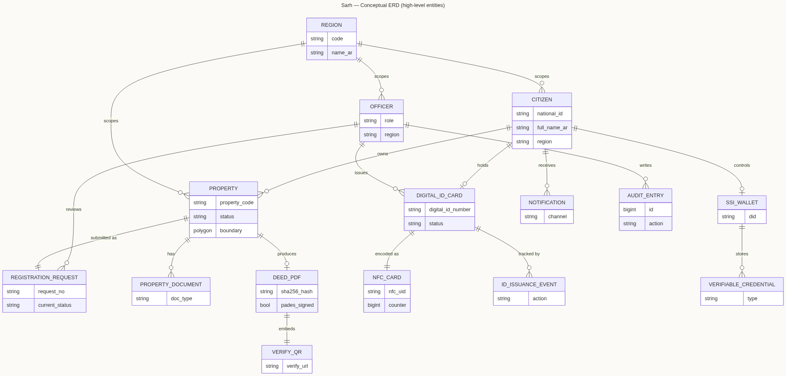
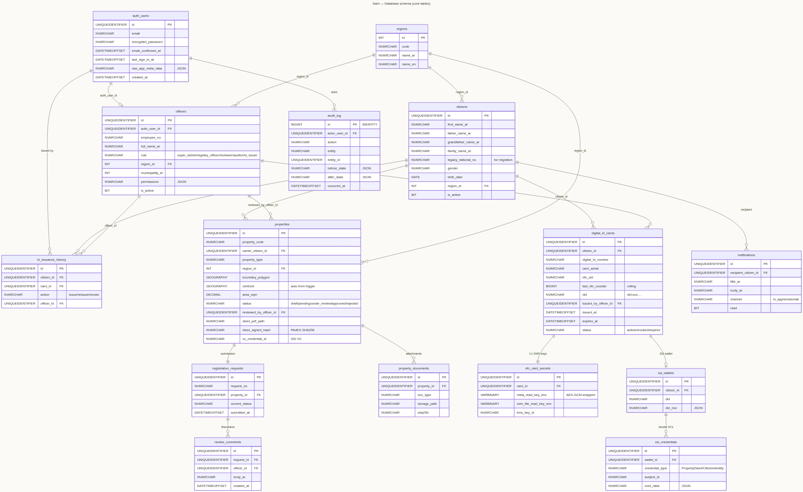
| Entity | Purpose | Key Fields |
|---|---|---|
citizens | Identity record, paper-era continuity | id, national_no, legacy_national_no, did |
officers | Registry / ID-issuance staff with JSON permissions | id, permissions (JSON), region_id |
properties | Parcel polygons + status | id, polygon (geography), centroid, status, deed_pdf_path, deed_signed_hash |
digital_id_cards | NTAG 424 DNA card-issuance records | id, citizen_id, uid, sun_counter |
verifiable_credentials | Issued W3C VCs (did:sov) | id, credential_def_id, citizen_id, property_id |
audit_log | Append-only, BIGINT IDENTITY ordering | id, actor_id, action, before_state, after_state |
UNIQUEIDENTIFIER DEFAULT NEWID() — except audit_log.id which is BIGINT IDENTITY for monotonic orderingDATETIMEOFFSET(3) DEFAULT SYSDATETIMEOFFSET()updated_at via AFTER UPDATE trigger on every entityis_active = 0 — never physical deletegeography (SRID 4326 implicit). Spatial methods used: STIntersects, STDistance, EnvelopeCenter(), STArea()NVARCHAR(N) CHECK (col IN (…))NVARCHAR(MAX) with CHECK ISJSON(col) = 1CREATE TRIGGER trg_audit_log_no_update ON audit_log
INSTEAD OF UPDATE AS
BEGIN
RAISERROR ('audit_log is append-only', 16, 1);
END;
CREATE TRIGGER trg_audit_log_no_delete ON audit_log
INSTEAD OF DELETE AS
BEGIN
RAISERROR ('audit_log is append-only', 16, 1);
END;The trigger is the contract: even a privileged DBA cannot rewrite history through application code paths without first dropping the trigger — an action which is itself logged at the SQL Server engine level.
Chapter 6
The class diagram captures the principal domain types in the .NET API layer and the relationships between them. Each class corresponds either to a database entity or to a service that orchestrates writes.
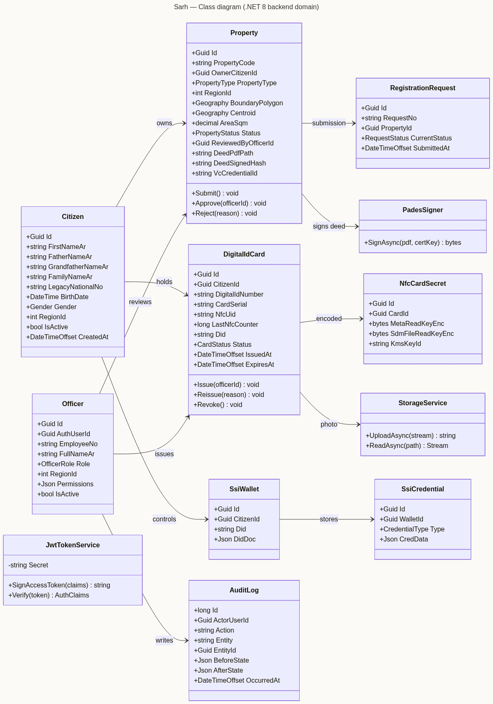
JwtTokenService — signs and validates HS256 tokens from SARH_JWT_SECRET.StorageService — abstracts the local filesystem under STORAGE_ROOT; all upload paths go through this single seam.ReviewService — orchestrates officer approval: persists state, invokes DeedPdfBuilder, computes SHA-256, writes to audit_log.DeedPdfBuilder — QuestPDF + QRCoder; renders A4 Arabic-RTL deed with three card sections, parcel map, and verify QR.VerifyService — public, no-auth resolver from deed code → public deed view (incl. SHA-256 for client integrity check).Chapter 7
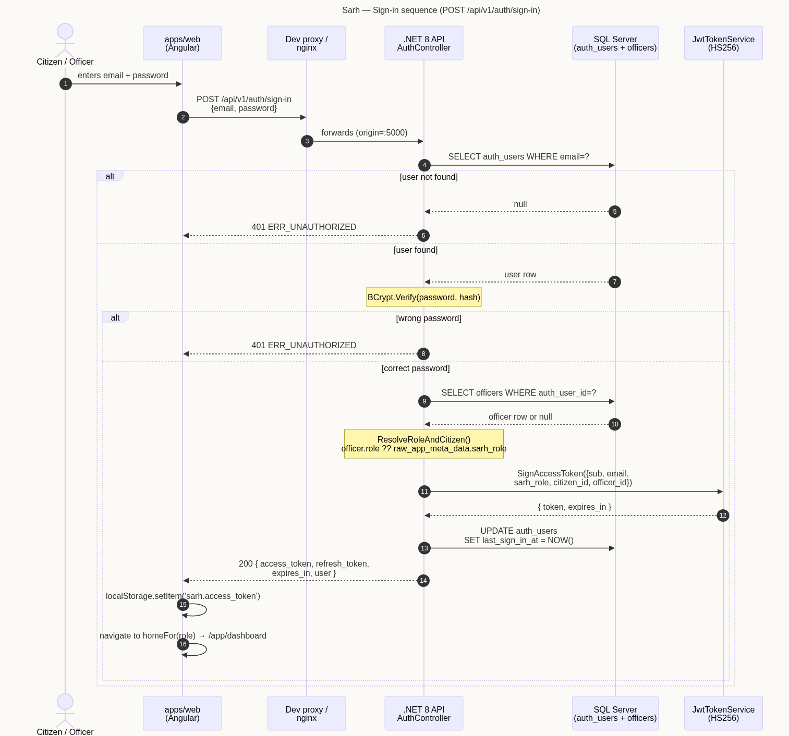
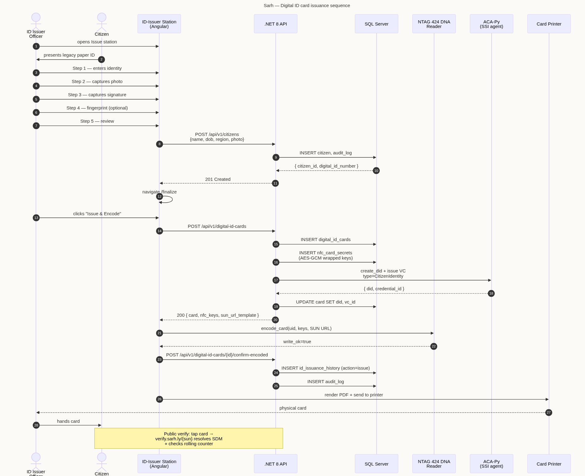
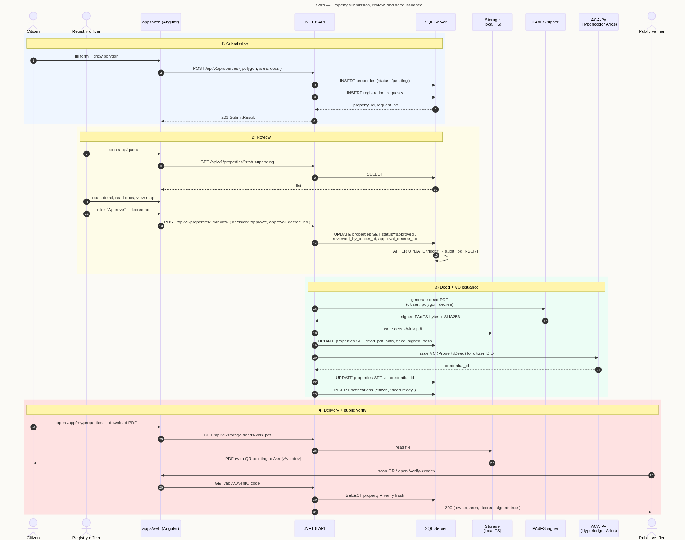
Chapter 8
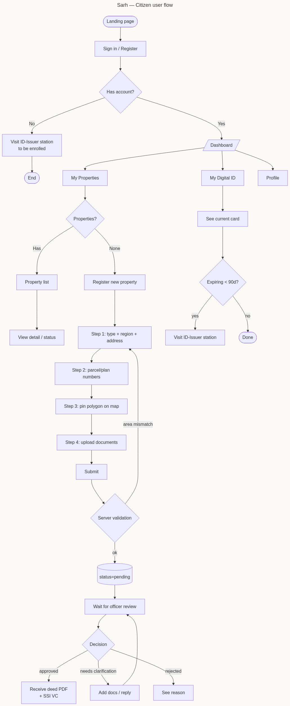
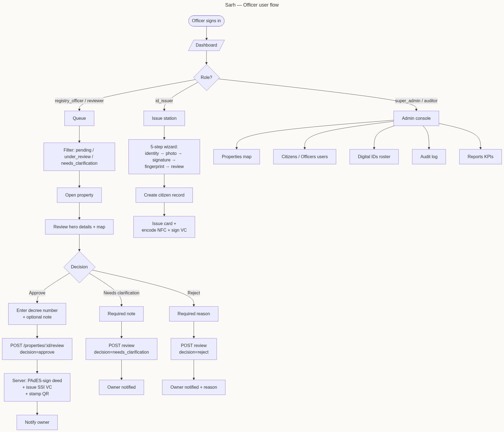
Chapter 9
The visual system is anchored in a "PropTech paper-card" aesthetic: warm paper background, slate ink, deliberate orange accents for action, cyan for confirmation, red for caution. We deliberately avoid green to keep the language of "approved" anchored in a neutral cool tone (cyan), which reads as verified by the system rather than positive emotion.
| Surface | Family | Notes |
|---|---|---|
| Arabic UI | IBM Plex Arabic, Cairo, Tajawal | RTL, font-feature-settings opt for ligatures |
| Latin UI | Inter, Segoe UI, system-ui | Tabular numerals on for IDs and counts |
| Code / IDs | JetBrains Mono | For citizen national_no, deed codes, hashes |
--rule, padding 22 px--rule
Default direction is RTL. Logical CSS properties (margin-inline-end,
padding-inline-start) are used throughout so the same stylesheet
flips correctly when an LTR shell (e.g. the verify page) is rendered.
Validation messages, placeholders, button labels, and toast copy are all
Arabic by default; the verify page additionally exposes English to support
foreign banks and courts.
Chapter 10
Five low-fidelity wireframes establish the page-level grammar of the system. They are intentionally sparse: skeleton structure, no microcopy, no real iconography. Their purpose is to fix layout and information hierarchy before higher-fidelity work begins.
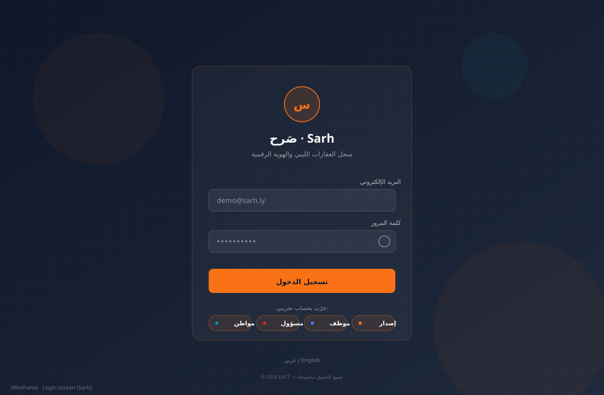
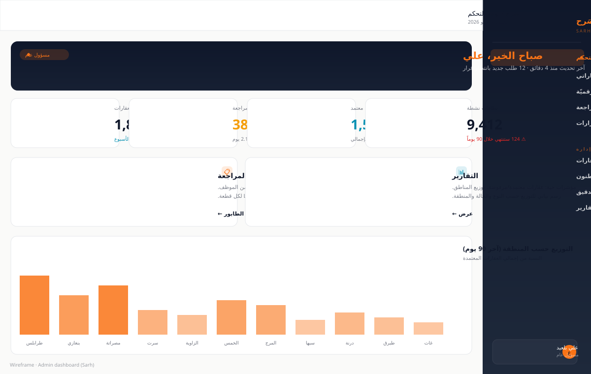
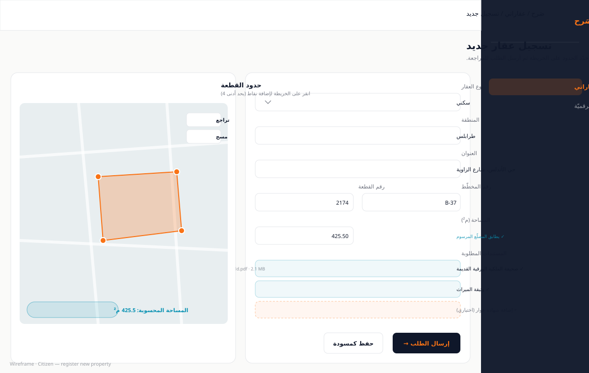
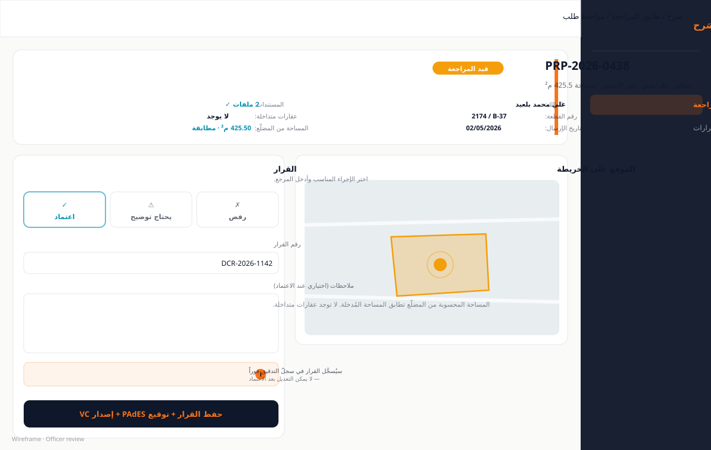
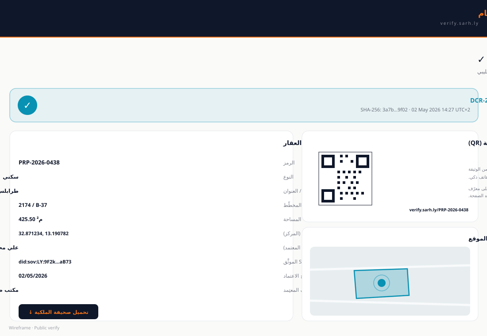
Chapter 11
/api/v1//citizens, /properties, /digital-id-cards?cursor=&limit=20 — never offset on large tables{ "error": { "code": "...", "message_ar": "...", "message_en": "..." } }audit_log row through a global filter| Method | Path | Auth | Description |
|---|---|---|---|
| POST | /auth/login | Public | Citizen or officer sign-in; returns JWT |
| GET | /citizens/me | Citizen | Self-profile + linked properties summary |
| POST | /properties | Citizen | Submit a property registration with polygon + documents |
| GET | /properties/queue | Officer | Pending submissions in officer's region |
| POST | /properties/{id}/approve | Officer | Approve, render PDF deed, store hash |
| POST | /properties/{id}/reject | Officer | Reject with Arabic reason |
| POST | /digital-id-cards | ID-Issuer | Capture biometrics, encode NTAG 424 DNA card |
| GET | /verify/{code} | Public | Public deed view with hash for tamper check |
| GET | /verify/{code}/deed.pdf | Public | Streams PDF; sets X-Deed-SHA256; returns 409 on mismatch |
| Code | HTTP | Meaning |
|---|---|---|
ERR_AUTH_INVALID | 401 | Bad credentials |
ERR_PERMISSION | 403 | Permission map denies the action |
ERR_GEO_CENTROID_DUP | 409 | Approved property already exists at the same centroid |
ERR_GEO_OVERLAP_WARN | 200 (warning) | Polygon overlaps an existing one — review required, not blocked |
ERR_DEED_HASH_MISMATCH | 409 | Stored SHA-256 does not match served PDF — tamper indicator |
ERR_NFC_SUN_INVALID | 400 | SUN counter outside accepted window |
Chapter 12
/auth/* and /propertiessarh_app SQL login with least-privilege grants; no db_ownerStorageService; path traversal blocked at boundarySARH_JWT_SECRETsub, citizen_id or officer_id, role, permissions (JSON), exp[OfficerOnly("permission.key")] filter checks the map without DB roundtrip
Every approved deed PDF is rendered by DeedPdfBuilder (QuestPDF +
QRCoder), then SHA-256-hashed by ReviewService; the hash and the
on-disk path are stored on properties.deed_signed_hash and
properties.deed_pdf_path. On every public download via
GET /verify/{code}/deed.pdf, the server reads the file, recomputes
SHA-256, compares against the stored hash, and returns HTTP 409 if they
diverge — this is the system's primary tamper indicator. The hash is also
surfaced on the public verify page so any third party can re-verify it
against their own download.
NTAG 424 DNA chips emit a Secure Unique Number (SUN) message at every read — a URL with a rolling counter and a per-card MAC. The verification server rejects a SUN whose counter is below the last-seen value (replay) or whose MAC does not validate against the per-card key. A static UID alone is never treated as proof of authenticity.
Every write endpoint emits a row into audit_log. Rows carry actor,
action, target entity, before-state, after-state, IP address, and timestamp.
The table has INSTEAD OF UPDATE and INSTEAD OF DELETE
triggers that raise an error — no application code path can rewrite history.
Trigger removal would be visible in SQL Server's own DDL audit.
.env.local is gitignored/auth/* and /properties/submitChapter 13
| Phase | Title | Status |
|---|---|---|
| 0 | Repo scaffold + infra | Complete |
| 1 | Schema + RLS-equivalent + seed | Complete |
| 2 | Backend auth + citizens module | Complete |
| 3 | Digital ID issuance + NFC encoding | Complete |
| 4 | Properties module + spatial queries | Complete |
| 5 | Workflow + officer review + notifications | Complete |
| 6 | SSI wallet + VC issuance | In progress |
| 7 | Citizen mobile app (Flutter) | In progress |
| 8 | Officer web portal (Angular) | Complete |
| 9 | ID-issuer station (Angular + NFC + camera) | Complete |
| 10 | Admin console + reports | Complete |
| 11 | Public verification site | Complete |
| 12 | Hardening, audit, deployment | Pending |
legacy_national_no to the new state identifier without data lossChapter 14